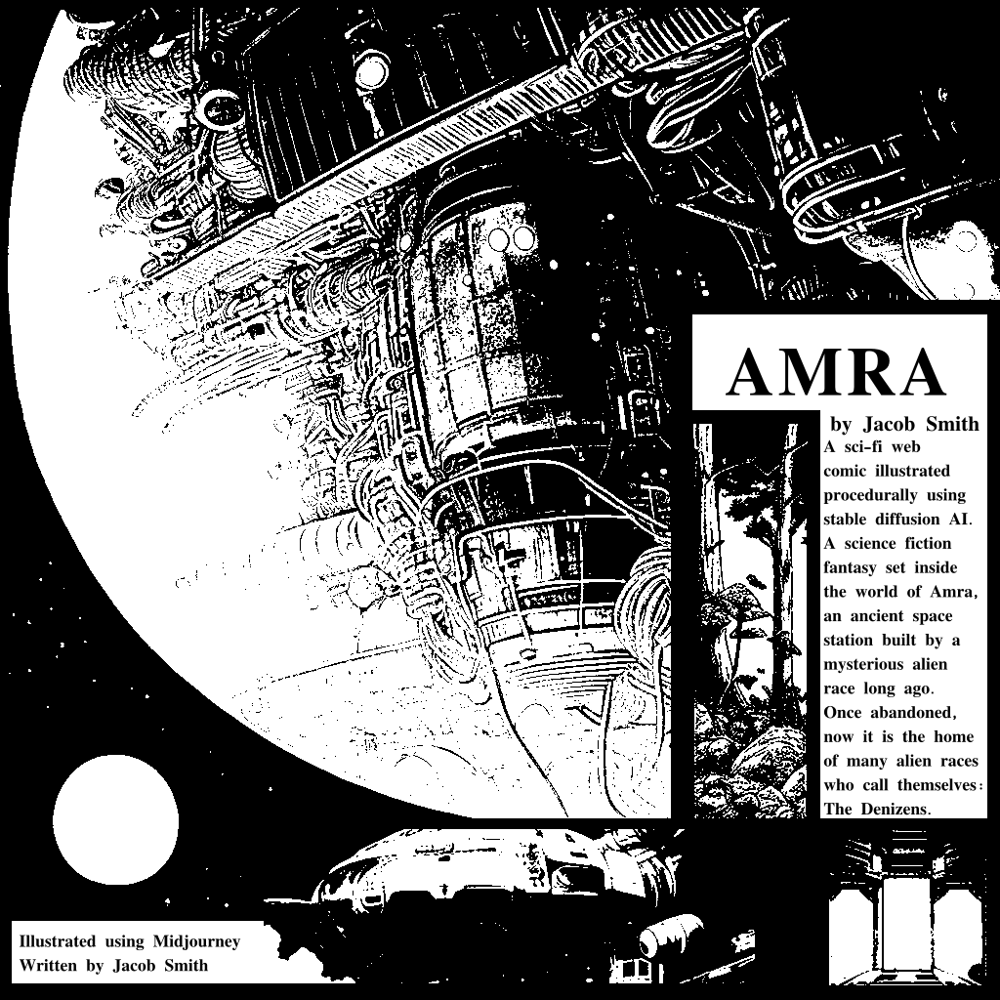
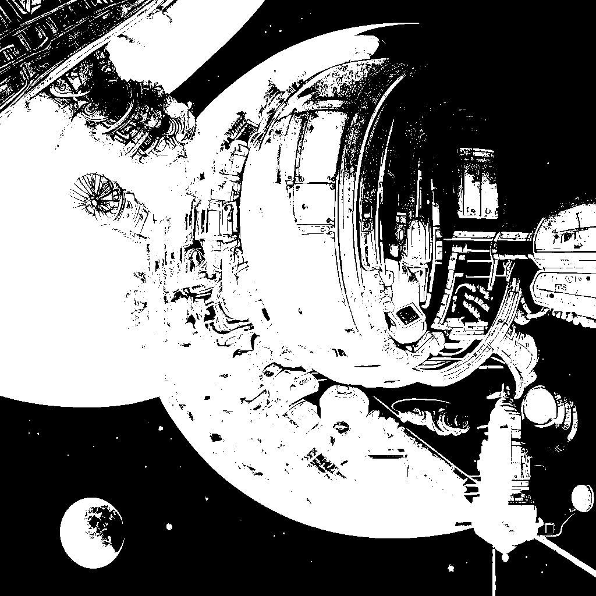
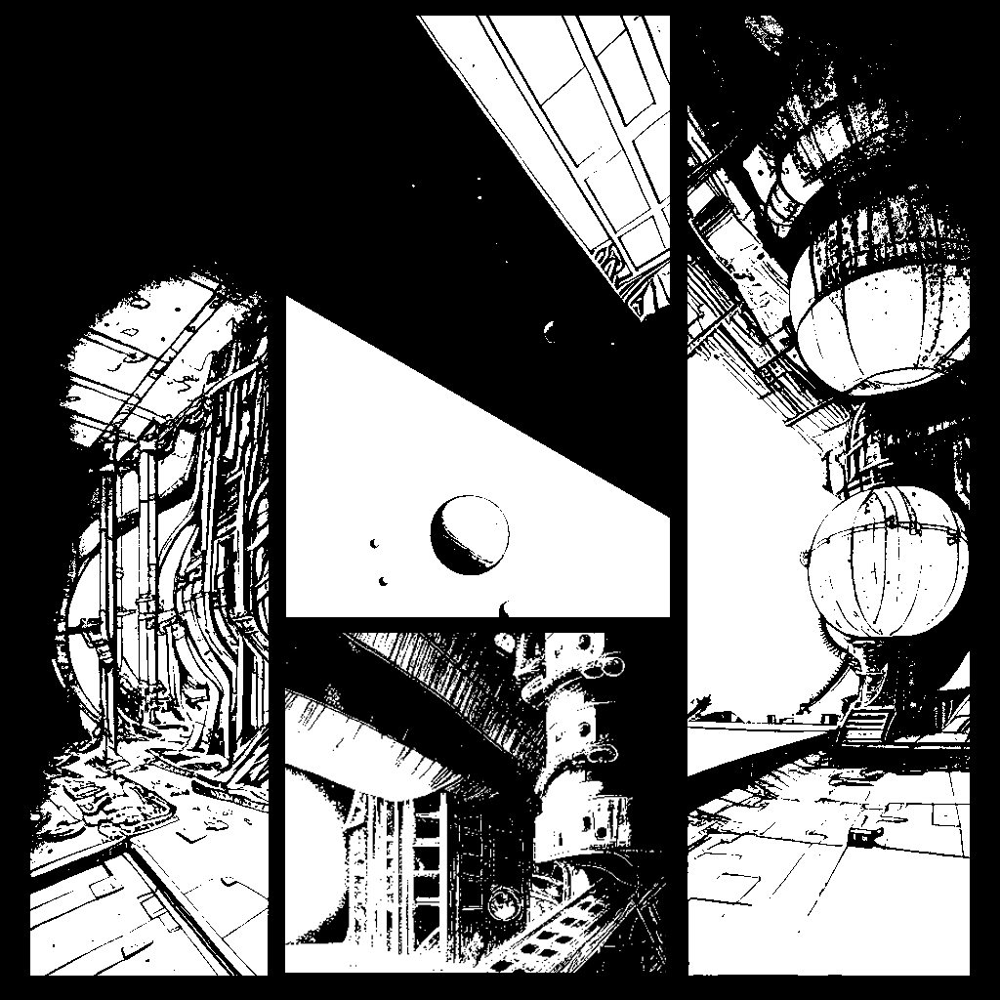
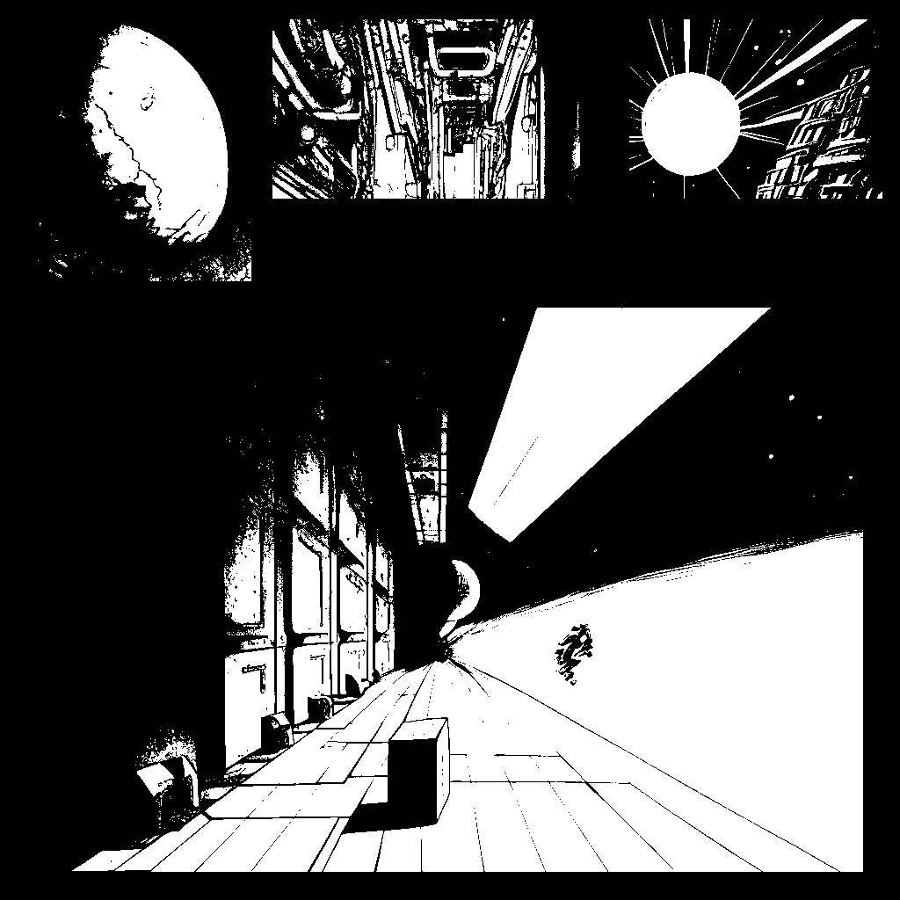
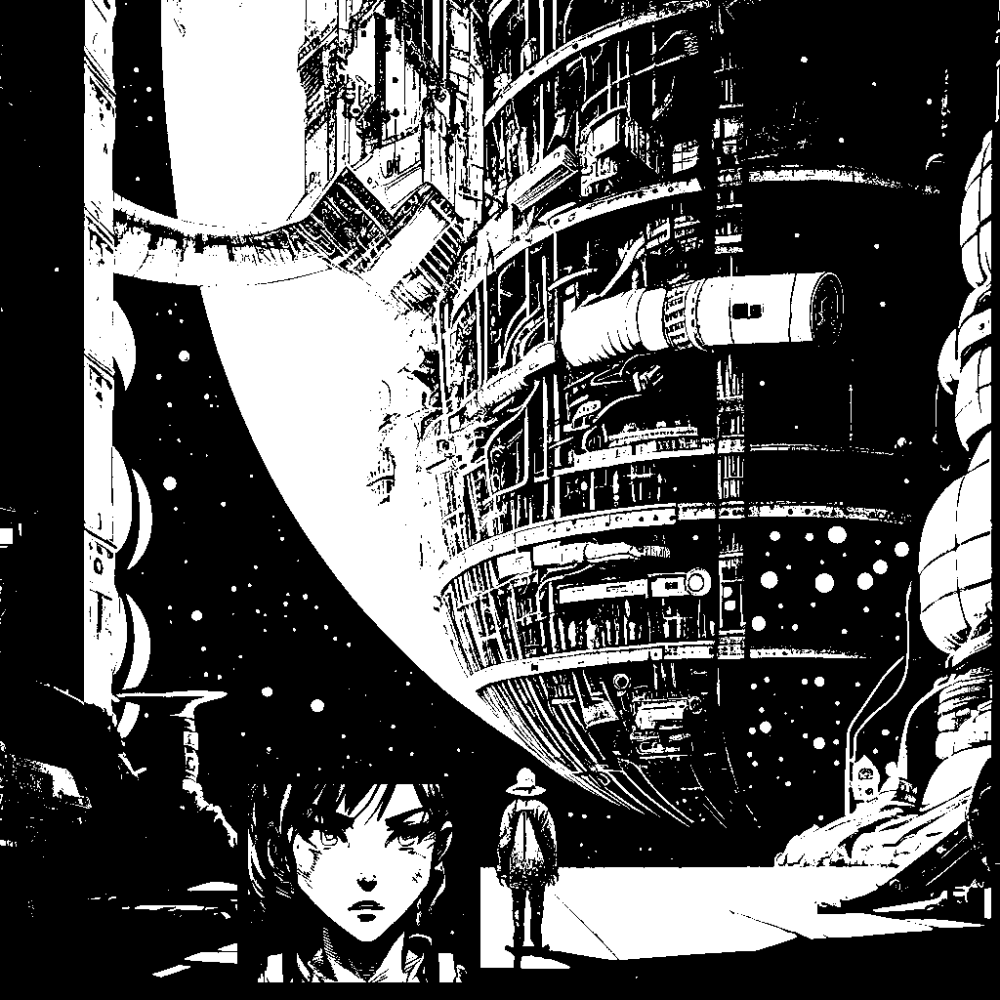
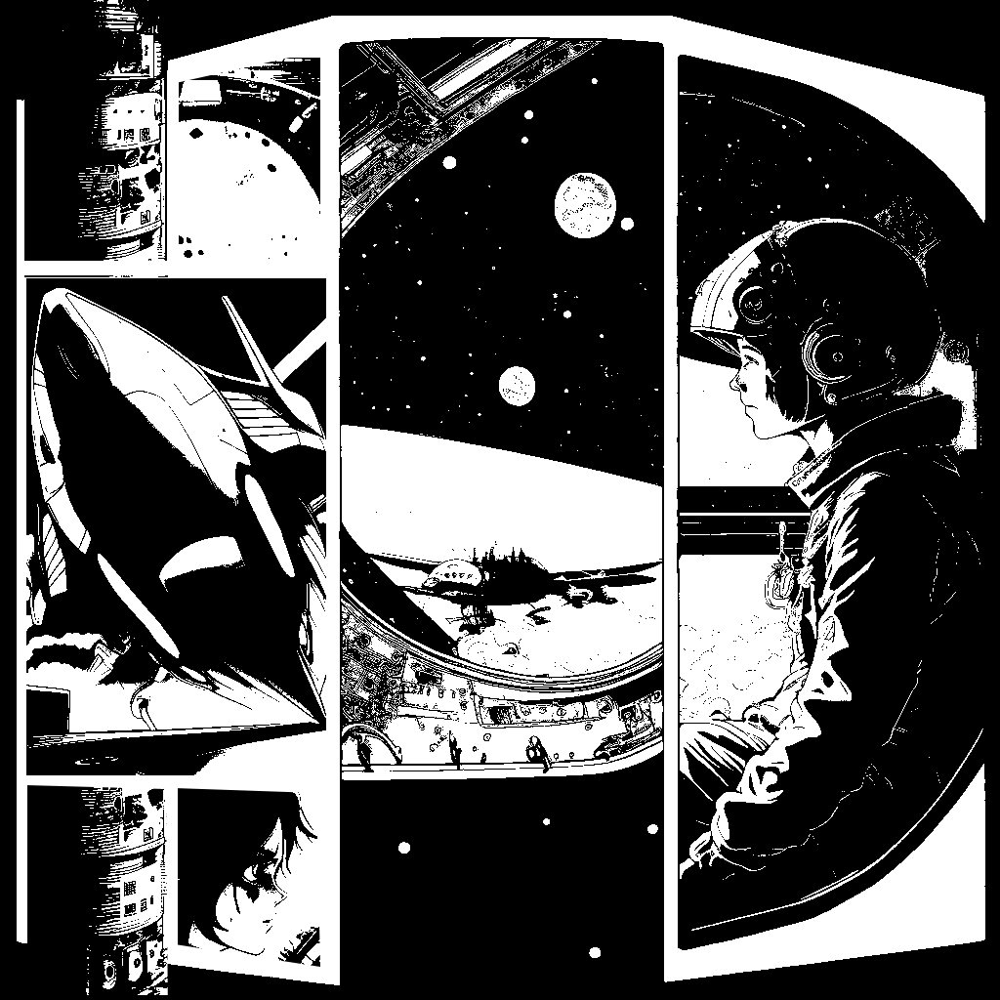
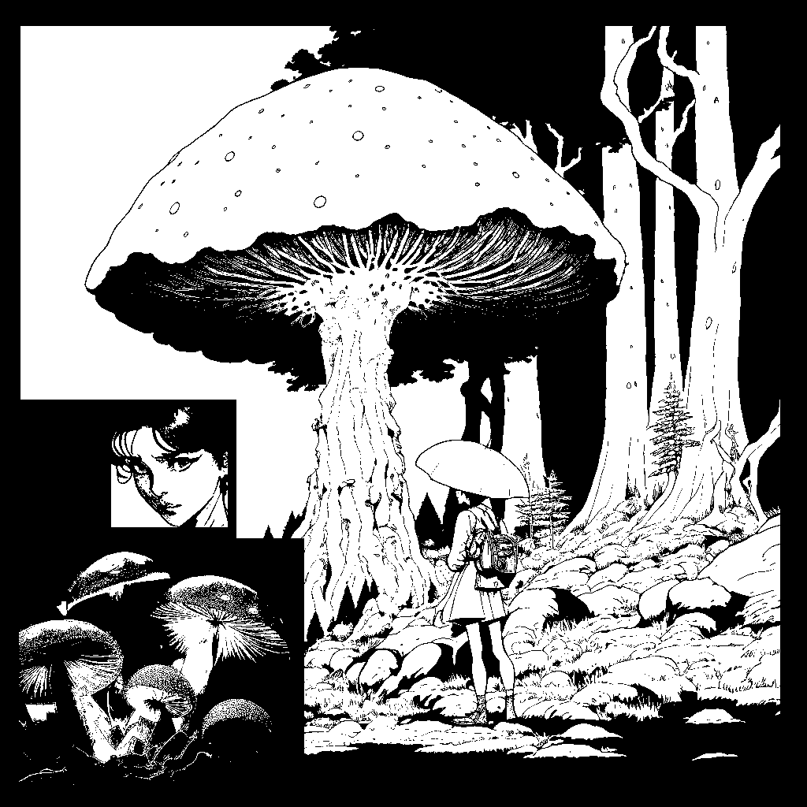
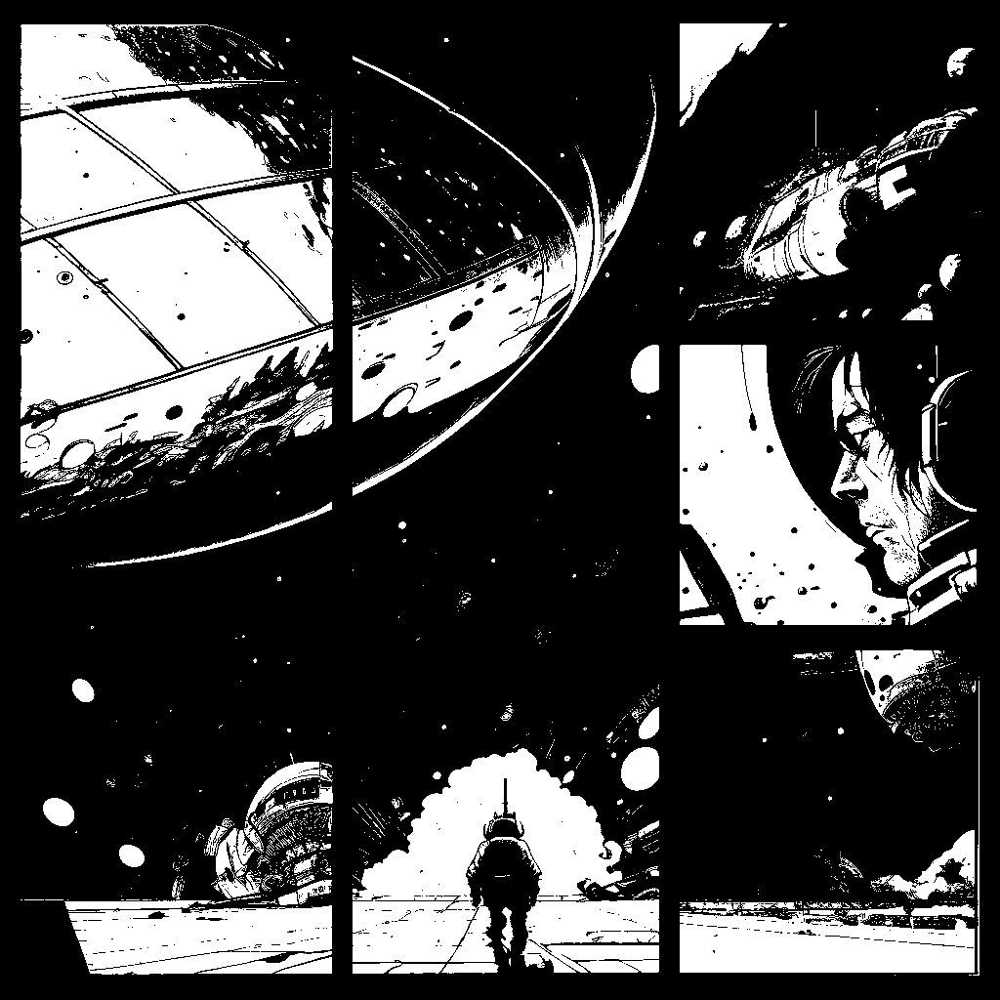
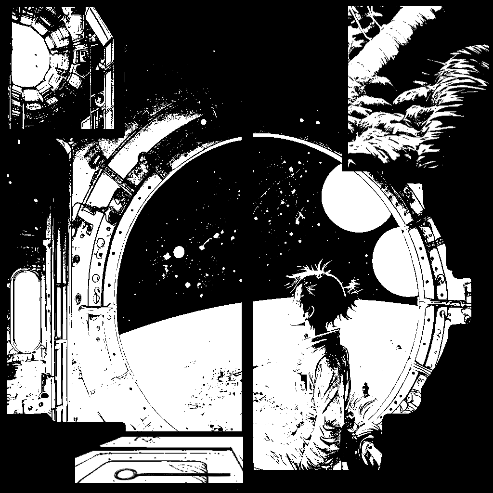

A derelict space station of massive proportion orbits a lonely gas giant far away from Earth somewhere in the Milky Way. No one knows who built it or for what purpose, and few are aware of its existence. Alien architecture that shifts shape from room to room, a hallway will be cramped and densely packed with wires and pipes, then when walking into the next room you may be greeted with an impossibly huge cavern containing machinery the size of a small moon, you never know what you may find behind the next door inside the labrynthine station.

Though its original purpose is long forgotten and most of the machinery lays in waste abandoned, a steady heartbeat and the hum of engines can be heard wherever you are inside Amra. Some scholars believe the machinery is self-repairing, and in many places the wires seem to organically snake their way across the station as though they were vines. Cutting into the metallic alloy which forms the pipes is nearly impossible, and no explorers within the last hundred years have even attempted to do so - though if you explore far enough you would know that someone (or some thing) has been cutting new pathways. Yet the machines never falter, and the steady hum of engines has never changed as far as living memory of the station's current inhabitants serves.

Currently many races of aliens inhabit Amra, drifters from every corner of the Milky Way who sought refuge or hidden treasure within its walls. No one can agree where the station is located as it seems to span the length and breadth of the entire universe, such a construction is physically impossible - yet each race brings with it star-charts that are utterly incomprehensible to the others. Once inside, no one has ever managed to reach the outside again - though many have tried, and if any explorer has succeeded they have not returned to the cities where the majority of Amra's squatters reside.

From each city a steady stream of explorers sets forth seeking treasure, or failing that salvage, and always adventure. Great beasts are rumored to inhabit the larger rooms, and there are places explorers know never to tread that few (if any) return from. Most of the time scavengers find equipment left by previous explorers, as though the orginal designers are long gone the station has been home to treasure hunters for longer than anyone can remember. Vast expanses of the station are yet to be explored and many are eager to discover hordes of supplies left by those who came before. Rarely a relic of the progenitors is found, "relic seekers", the most elite of the explorers, seek such items because they always hold immense power and clues to further treasures.

Vast pocket universes are contained within Amra's walls, and many of the cities are located within them. It is usually safer where there is open space, and the cities are built by those seeking shelter. Technology within Amra is diverse, with everything one might expect from space-age Earth to advanced alien weaponry and ancient relics of power beyond comprehension. Though Earth humans have inhabited the station for only the last century their technology can be found everywhere there are traders. Most inhabitants of Amra are scavenger races who came to the station seeking technology and do not build or invent for themselves, thus humans have found a consistent niche as artisans and traders.

Some rooms contain forests of alien biology, no doubt seeded by explorers and scavengers long ago. When the first doorway to Amra was dicsovered on Earth it was initially believed to be an abandoned cavern and was first explored by bio-tech companies seeking novel medicines. The private company explorers were surprised to discover that there was a large population of humans already living inside Amra - who speak languages and have traditions and cultures completely unkown to Earth scholars. Some suspect they are not all from Earth, or even all human - despite being biologically indistinguishable.

Most humans belong to a faction of city-states that have planted themselves in an area known for its vast natural resources, which have value to human craftsmen but not to alien scavengers who do not have use for raw materials. Conflicts are common within Amra and outside the federation of city-states a wild-west atmosphere permeates the station. Humans sometimes join the ranks of warring aliens, denizens who brought with them wars from outside of Amra, and some have joined the religious cult of the forebears, a group which seeks relics and worships the station's original builders.

This story begins with a young human epxlorer keen for adventure, who wishes to discover treasure to bring home to their city-state in hopes of uplifting their community from poverty, someone who is uninterested in the conflicts plaguing Amra but cannot avoid becoming enmeshed in the worst war the station's denizens will experience in a thousand years.
Yu sat inside his room in The Roach - the slums at the bottom of the city-state Finrest located within the Dog's Tooth, a large pocket universe containing mostly vast spheres of ice and shaped somewhat like a arrow. Hen won't be coming with him on this trip to the outlands, and though this bothers him somewhat it does not deter him, he holds in his hand a relic - a key which he knows opens an unexplored doorway located just a mile away within the city.

Explorers usually face grave danger when confronting new territory, however this trip cannot possibly be perilous because the entrance is located so close to the city, and must have been overlooked due to the Capybear plants overgrown around it (a poisonous leafy plant similar to terran poison ivy). It probably contains more Elmin, just like the rest of the small hideaways discovered by the city's founders in the area, one of the reasons why the city was founded here - Elmin is a food supply left by a race of Mantis-like aliens called the Elsid, a valuable consumable because it does not degrade over time (that anyone has measured), and which is mostly sugars and carbohydrates edible to humans. It is also lightweight and coveted by the adventurer's guilds for its usefulness when traveling. He can barter the Elmin for entrance into the Cimmers Guild and embark with them on their next expedition into the Heart - a newly discovered pathway between Dog's Tooth and The Soar with a great many unexplored doorways.